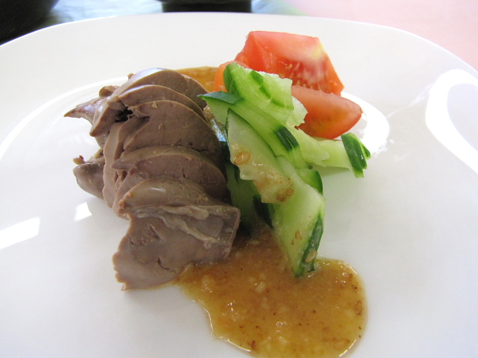

管理栄養士Kの元気いっぱいレシピ
index
menu
Top
レシピ
栄養ワンポイントアドバイス
リンク集
夏バテ予防対策メニュー
鶏レバーの酢味噌かけ

材 料 （2人分）
鶏レバー
100g
トマト
40g
キュウリ
30g
酢味噌だれ
味噌
小さじ2
酢
大さじ1
砂糖
大さじ1
出し汁
小さじ1
すり胡麻
小さじ1
おろしショウガ
10g
作り方
1
鶏レバーは脂肪の部分を取り除き、たっぷりのお湯で、しっかりゆでておく。
2
トマトはくし型に切り、きゅうりは薄切りして、水にさらしておく。
3
1の鶏レバーを冷まし、薄くスライスする。
4
器に3の鶏レバーを置き、2のトマト、きゅうりを添えて、酢味噌だれを
かけていただく。
PAGE TOP
Copyright(c) 医療法人明楽会 くまクリニック all rights reserved.